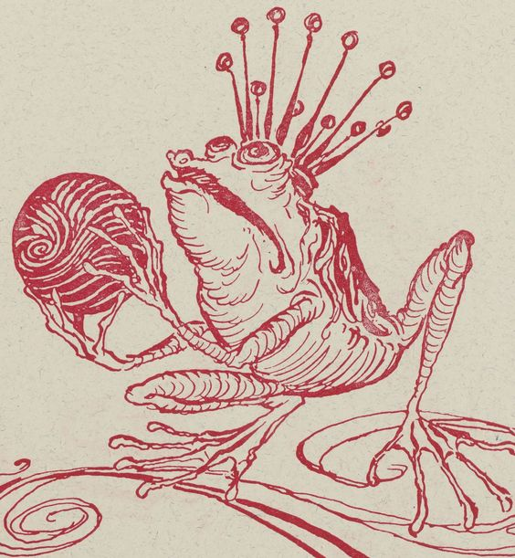
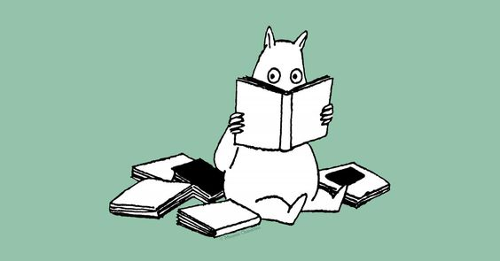
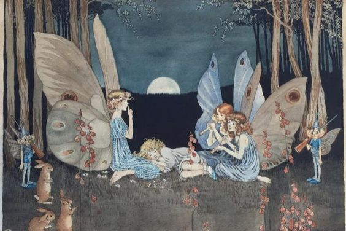
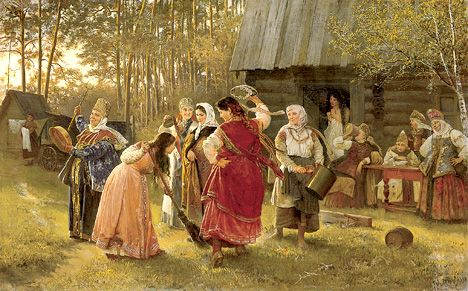
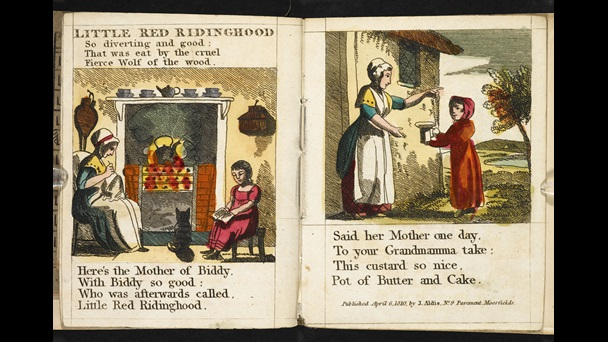
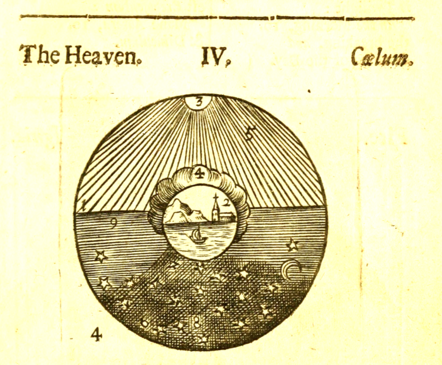
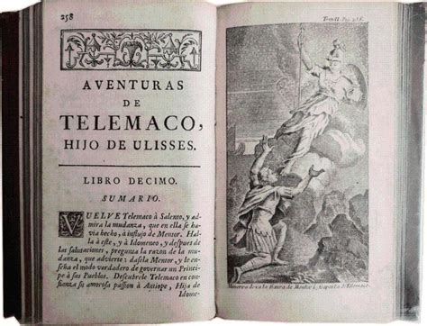

Es relevante conocer los origenes del género por excelencia de la literatura infantil: los cuentos .
Catalogados como infantiles de una manera despreciativa, los cuentos han estado siempre dentro del gusto humano.

El cuento avanza de manera similar a como el niño experimenta el mundo, de esta manera hace que refelxione acerca lo que la historia le revela .
A día de hoy, los cuentos permanecen siendo relevantes en nuestra forma de percibir el mundo desde edades tempranas.

Tradición oral
Los protagonistas dejan de ser heroes inalcanzables y endiosados para pasar a ser gente corriente.
Estos relatos se contaban en las reuniones sociales, bailes, en el campo... no por poetas, sino por gente común.

Narrados en lugares donde se reunian los adultos: versiones más primitivas con transfondos muy oscuros
Se dice que el hombre y la mortalidad infantil servían de inspiración para los cuentos de hadas surgidos en su mayoría en la Europa de la Edad Media.

La imprenta
Hornbooks: Cartillas pedagógicas mostraban los números o el alfabeto.
Chapbooks: Eran vendidos por vendedores ambulantes. Reproducían cuentos y leyendas para atraer a las audiencias menos cultas. Estaban mal escritos y toscamente ilustrados

Fábulas y demás
Las fábulas como instrucción preferida. Son breves historias donde los animales imitan el comportamiento de los humanos para dar lecciones de moral.
En Europa fue en donde se inicio la costumbre de añadir una sentencia al final: una moraleja
Primer libro documental: Orbis Sensualium Pictus o El mundo es imaginario.
Su principal innovación fue la concepción del aprendizaje basándose en el juego.
Mostrar el mundo nombrando sus objetos y acompañándolos de pequeños grabados de madera.

La obra llamada los dieciséis volúmenes de Las aventuras de Telémaco, fue muy popular y se tradujo en 80 idiomas.
Temas típicos en la literatura infantil de ahora.

Recopiladores
A pesar de no haber escrito ninguno de los cuentos, los hermanos Grimm los alteraron para que fueran más apropiados para los pequeños lectores.
Por otro lado, tanto la obra de Basile como la de Perrault no fue creada para dirigirse a los niños, fueron las catalogaciones posteriores las que las consideraron apropiadas para este público.